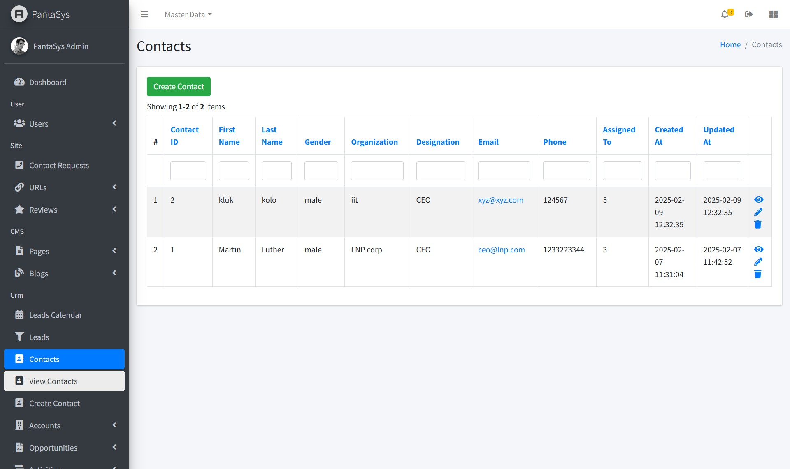
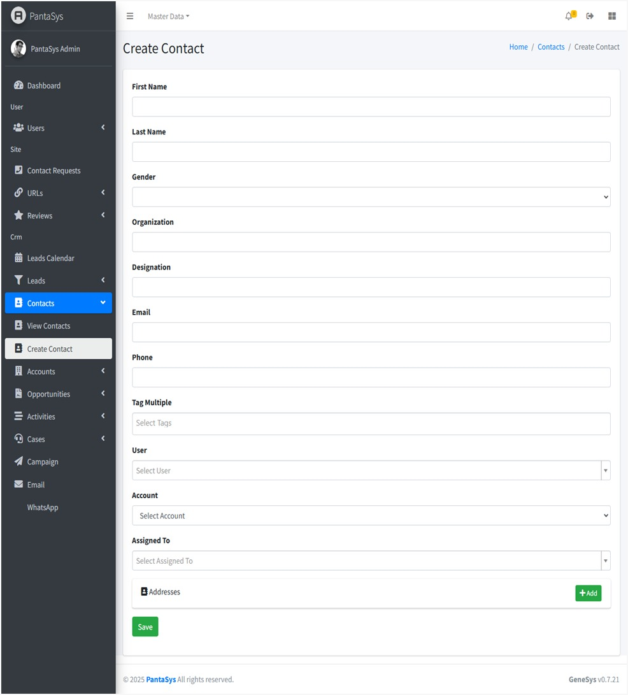
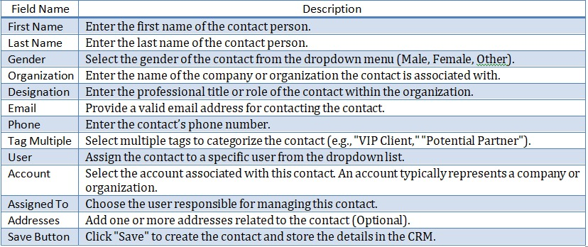

5. Contacts
5.2 Viewing all Contacts
On the “View Contacts” page, contacts are displayed in a table format, providing a comprehensive overview of all existing contacts.
{kind=link}
5.3 Create Contact Form
The Create Contact form allows users to add new contacts into the system. Below are the field descriptions along with their expected input values.
{kind=link}
Below are the field descriptions along with their expected input values:
{kind=link}
Form Functionality
This form is used to store detailed information about a contact.
Dropdown selections help streamline data entry and prevent errors.
Users can categorize contacts using tags for better segmentation.
The Save button finalizes the contact creation process.
5.4 Managing Contacts
PantaSys CRM provides comprehensive functionalities to manage contacts effectively.
Creating a Contact
To add a new contact:
Navigate to Contacts: Click the Contacts button and expand the dropdown list.
Create Contact: Click the Create Contact button.
Fill in Details: Complete the fields in the form.
Save: Click “Save” to add the new contact to the system.
Viewing a Contact
To view details of an existing contact:
Navigate to View Contacts: Access the View Contacts page.
Contacts Table: Contacts are displayed in a table format with relevant details.
View Icon: Click the View icon in the Actions column corresponding to the desired contact to see detailed information.
{kind=link}
Updating a Contact
To modify an existing contact:
Navigate to View Contacts: Access the View Contacts page.
Edit Icon: Locate the contact to be updated and click the Edit icon.
Modify Details: Make the necessary changes in the form.
Save: Click Save to apply the updates.
Deleting a Contact
To remove a contact from the system:
Navigate to View Contacts: Access the View Contacts page.
Delete Icon: Locate the contact to be deleted and click the Delete icon.
Confirm Deletion: Confirm the deletion when prompted to remove the Contact.